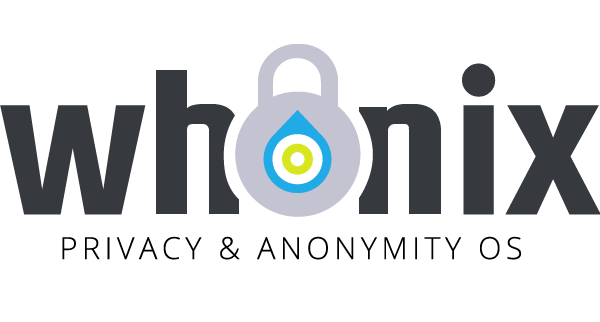

We believe security software like Whonix needs to remain Open Source and independent. Would you help sustain and grow the project? Learn more about our 14 year success story and maybe DONATE!
E-Sign ConsentDocumentationForcing .onion on ProjectPrevious page: E-Sign ConsentIndex page: DocumentationNext page: Forcing .onion on ProjectWhonix Trademark Policy

Whonix is a trademark. How to use Whonix trademarks.
Trademarks
Whonix (as represented by ENCRYPTED SUPPORT LLC, see Imprint) is committed to protect and ensure consistent usage of its trademarks, logos, and styles, and also make it easier for every bona fide user to use. The trademark has been in use since 2012.
Registered Trademarks:
Whonix®- Application Filing Date: Oct. 25, 2022
- Publication Date: Sep. 19, 2023
- Registration Date: Dec. 05, 2023
- uspto Trademark Official Gazette
- uspto Trademark Status
Trademarks:
Qubes-Whonix™Non-Qubes-Whonix™Whonix-Gateway™Whonix-Workstation™Whonix-Custom-Workstation™
 Profile
image
Profile
image Banner
image
Banner
image

Trademark Policy
Version: 1.0
Published: 22 February 2019
ENCRYPTED SUPPORT LLC owns a number of trademarks in both word and logo form including brands, slogans, and styles. This policy encompasses all marks, in word and logo form, collectively referred to as "Whonix trademarks". You can see a non-exhaustive list of Whonix trademarks, including both registered and unregistered (but otherwise legally recognized) trademarks in the chapter Trademarks.
The objective of this trademark policy is:
- to encourage widespread use and adoption of the Whonix trademarks,
- to clarify proper usage of Whonix trademarks by third parties,
- to prevent misuse of Whonix trademarks that can confuse or mislead users with respect to Whonix or its affiliates.
Please note that it is not the goal of this policy to limit commercial activity around Whonix. We encourage businesses to work on Whonix while being compliant with this policy.
Following are the guidelines for the proper use of Whonix trademarks by publishers and other third parties. Any use of or reference to Whonix trademarks that is inconsistent with these guidelines, or other unauthorized use of or reference to Whonix trademarks, or use of marks that are confusingly similar to Whonix trademarks, is prohibited and may violate Whonix trademark rights.
Any use of Whonix trademarks in a misleading or false manner or in a manner that disparages Whonix, such as untruthful advertising, is always prohibited.
When You Can Use the Whonix Trademarks Without Asking Permission
- You can use Whonix trademarks to make true factual statements about Whonix or communicate compatibility with your product truthfully.
- Your intended use qualifies as "nominative fair use" of the Whonix trademarks, i.e., merely identifying that you are talking about Whonix in a text, without suggesting sponsorship or endorsement.
- You can use Whonix trademarks to describe or advertise your services or products relating to Whonix in a way that is not misleading.
- You can use Whonix trademarks to describe Whonix in articles, titles or blog posts.
- You can make t-shirts, desktop wallpapers, caps, or other merchandise with Whonix trademarks for both commercial and non-commercial usage.
- You can also make merchandise with Whonix trademarks for both commercial and non-commercial usage. In case of commercial usage, we recommend that you truthfully advertise to customers which part of the selling price, if any, will be paid to the Whonix project. See our Donate page for more information on how to donate to the Whonix project.
When You Can NEVER Use the Whonix Trademarks Without Asking Permission
- You cannot use Whonix trademarks in any way that suggests an affiliation with or endorsement by the Whonix project or community, if the same is not true.
- You cannot use Whonix trademarks in a company or organization name or as the name of a product or service.
- You cannot use a name that is confusingly similar to Whonix trademarks.
- You cannot use Whonix trademarks in a domain name, with or without commercial intent.
How to Use the Whonix Trademarks
1. Use the Whonix trademarks in a manner that makes it clear that your project is related to the Whonix project, but that it is not part of Whonix, produced by the Whonix project, or endorsed by the Whonix project.
2. Acknowledge ENCRYPTED SUPPORT LLC's ownership of the Whonix trademark prominently.
Example:
[TRADEMARK] is a trademark owned by ENCRYPTED SUPPORT LLC.
3. Include a disclaimer of sponsorship, affiliation, or endorsement by Whonix on your website, as well as on all related printed materials.
Example:
X PROJECT is not affiliated with Whonix. Whonix is a trademark owned by ENCRYPTED SUPPORT LLC.
4. Distinguish the Whonix trademarks from the surrounding words by italicizing, bolding or underlining it.
5. Use the Whonix trademarks in their exact form, neither abbreviated or hyphenated, nor combined with any other word or words.
6. Do not create acronyms using the Whonix trademarks.
Permission To Use
When in doubt about the use of Whonix trademarks, or to request
permission for uses not allowed by this policy, please send an email to
adrelanos(at)whonix.org
(Replace (at) with
@.)Please DO
NOT use e-mail for one of the following
reasons:Private Contact: Please avoid e-mail whenever possible. (Private
Communications Policy)User Support Questions: No. (See Support.)Leaks Submissions: No. (No Leaks Policy)Sponsored posts: No.Paid links: No.SEO reviews: No.Advertisement deals: No.Default application installation: No. (Default
Application Policy) with subject "Trademark
Use Request"; be sure to include the following information in the body
of your message:
- Name of the User
- Name of the organization/project
- Purpose of Use (commercial/non-commercial)
- Nature of Use
Newer Versions of this Policy
This policy may be revised from time to time and updated versions shall be available at https://www.whonix.org/wiki/Trademark_Policy.
Guidelines for Using Logos
- Any scaling must retain the original proportions of the logo.
- Do not use the Whonix logos as part of your company logo, product logo, or branding itself. They can be used as part of a page describing your products or services.
- You need not ask us for permission to use logos on your own website solely as a hyperlink to the Whonix project website.
For any queries with respect to these guidelines, please send an
email to
adrelanos(at)whonix.org
(Replace (at) with
@.)Please DO
NOT use e-mail for one of the following
reasons:Private Contact: Please avoid e-mail whenever possible. (Private
Communications Policy)User Support Questions: No. (See Support.)Leaks Submissions: No. (No Leaks Policy)Sponsored posts: No.Paid links: No.SEO reviews: No.Advertisement deals: No.Default application installation: No. (Default
Application Policy).
Organizations Licensed to Use Whonix Trademarks
The following organizations have been licensed to use the Whonix trademark through a License Agreement:
- The Qubes OS Project: Whonix is a partner of Qubes OS. There is Whonix for Qubes or Qubes-Whonix™.
Attribution
The text of Whonix trademark policy is based on Debian's trademark policy.
Categories: Documentation